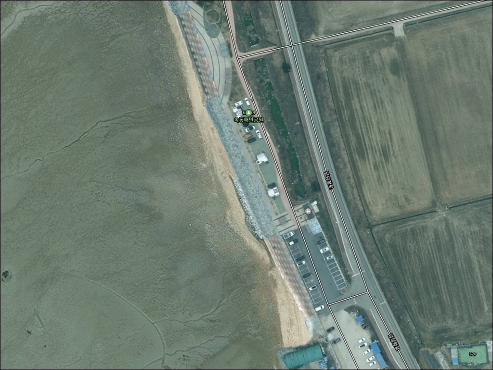
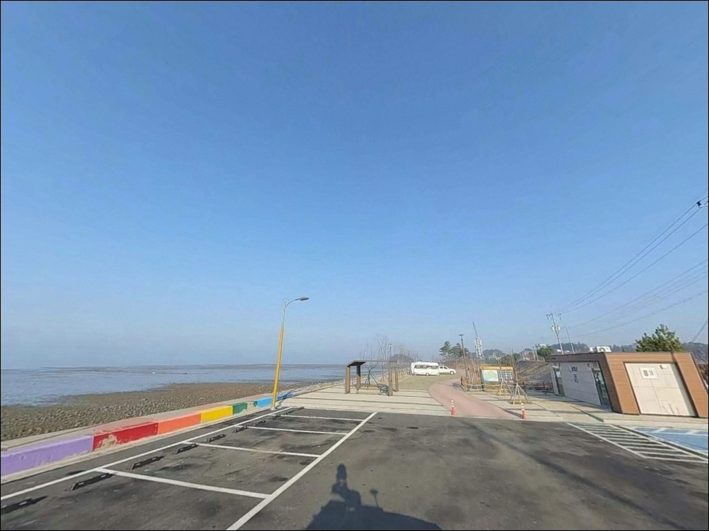
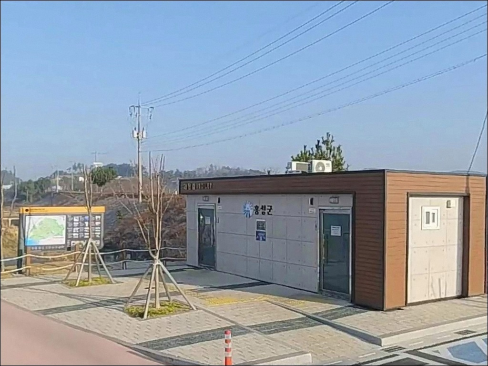
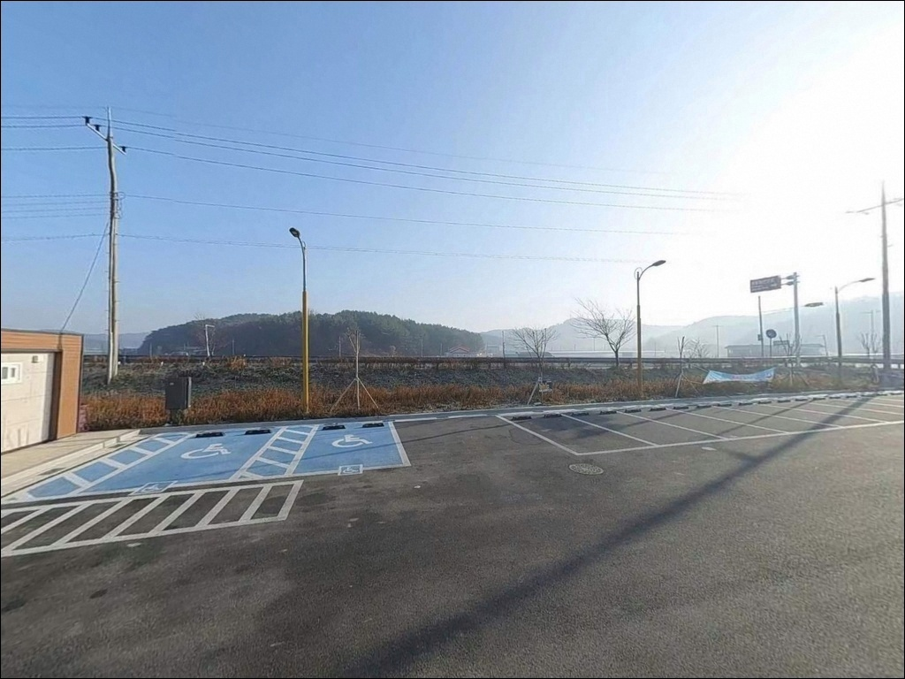
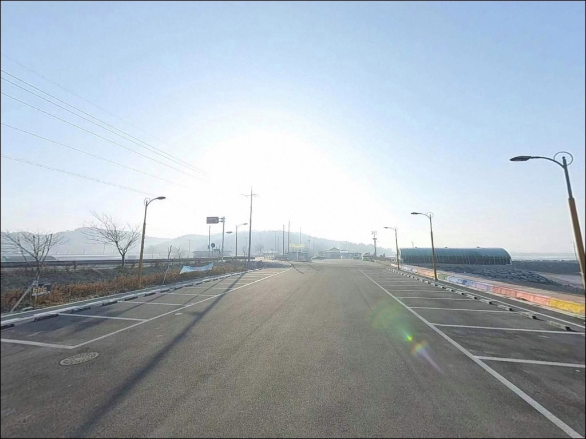
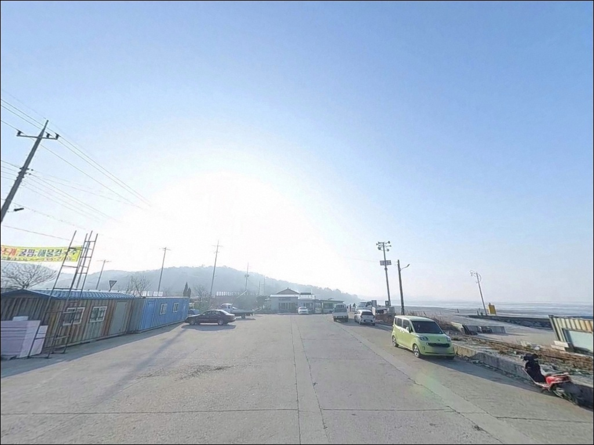
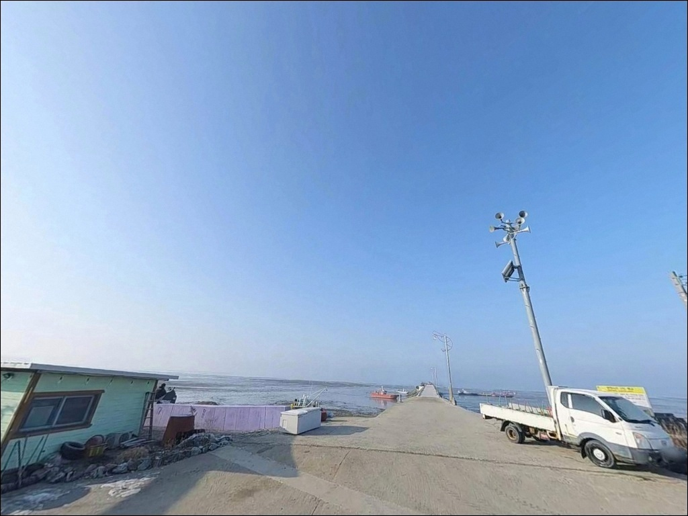
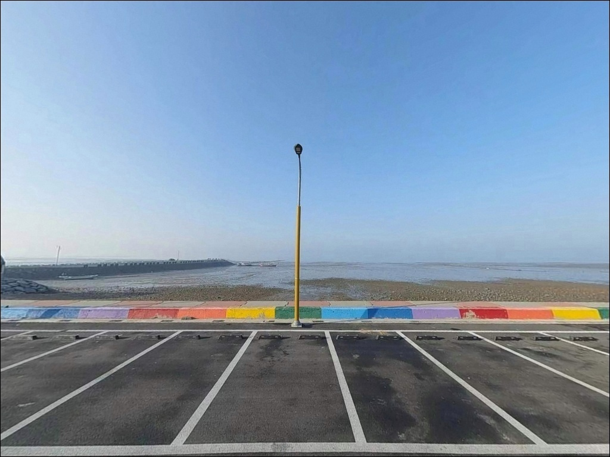
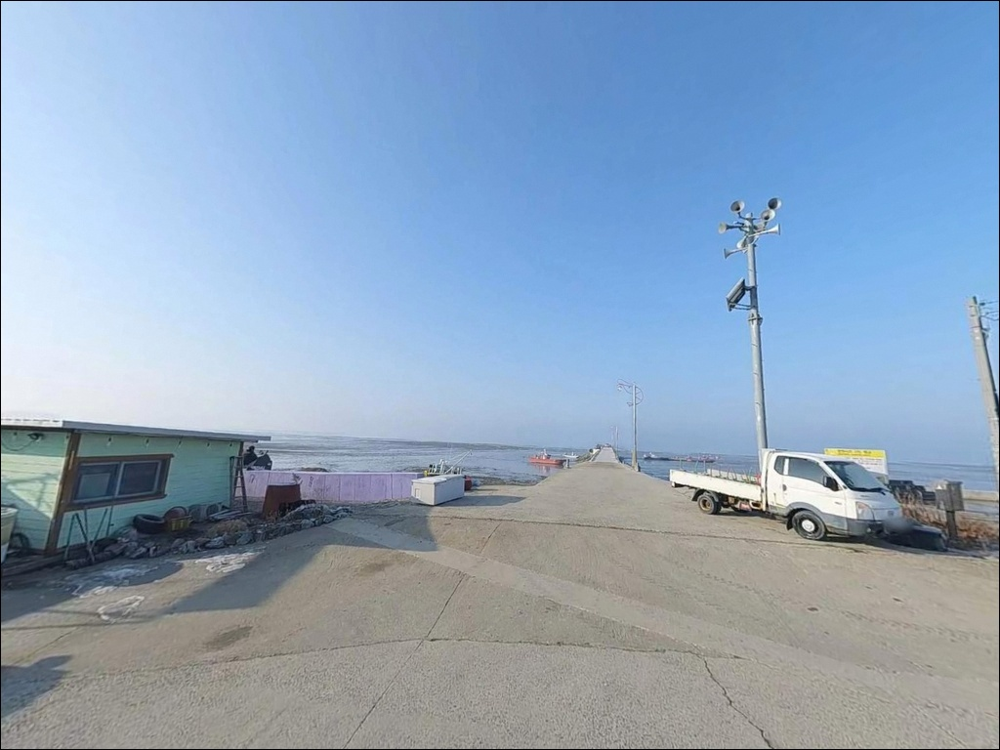

속동해안공원, 충남 홍성군 공원형 차박, 낚시 스팟
이 페이지에는 광고(제휴 링크 포함)가 있으며, 광고 링크를 통해 구매하면 운영자가 판매 수익 또는 수수료를 받을 수 있습니다. 포인트 사진: 카카오맵 스카이뷰·로드뷰. 이 페이지의 지도·사진 이미지는 카카오맵의 실제 서비스 이미지와 다를 수 있습니다.


포인트 안내
속동해안공원
충남 홍성군 서부면 상황리 629-13
물때 확인 없이 이곳에 들어서면
간조 시 드러나는 갯벌 앞에서
채비를 풀지도 못하고 돌아서게 됩니다.
천수만 안쪽에 자리한 내만형 연안 지형으로,
만조 전후 시간대가 낚시 가능 여부를 결정하는
포인트입니다.
속동해안공원은 홍성군 서부면 상황리에 조성된
해안 근린공원으로, 속동전망대와 해송림,
테마정원이 함께 구성된 관광형 공간입니다.
방파제나 선착장 전용 구조는 없으며,
연안 지형을 이용한 탐색형 낚시가
이 포인트의 기본 성격입니다.
이 글은 속동해안공원의
진입 환경, 낚시 여건 분석, 차박 조건,
대안 포인트 동선에 집중합니다.
조황 단정이나 특정 어종 보장은
이 글의 범위에 포함되지 않습니다.

1. 진입 동선과 포인트 접근성
홍성군이 관리하는 공원 특성상
속동해안공원 진입도로는 잘 정비된 포장도로입니다.
급경사 구간 없이 해안도로를 따라
접근하는 구조여서
일반 승용차에서 SUV까지 진입에 어려움이 없습니다.
주차는 공원 내 주차장을 기본으로 활용합니다.
관광지로 조성된 만큼 주차 공간 자체는
해안도로 라인과 함께 확보되어 있어
회차 여건도 나쁘지 않은 편입니다.
다만 주말이나 노을 시간대에는
관광객 차량이 많아 평일 방문이 여유롭습니다.
공원 산책로와 데크길을 따라 해안선에 접근하면
데크 끝단이나 해안 돌출부가
이 포인트에서 자리를 잡을 만한 구간입니다.
방파제 전용 발판은 없는 지형이므로
현장에서 직접 확인한 뒤 낚시 자리를 정하는 순서가 맞습니다.

2. 차박 여건과 야간 체류 환경
공원 주차장은 천수만 방향으로 열린 위치에
자리하고 있어 경치형 차박으로서의 조건은
나쁘지 않습니다.
일몰 무렵 분위기가 좋은 편이지만
관광지 특성상 주말·성수기에는
방문객과 차량 통행이 이어지는 환경입니다.
야간에는 전망대와 공원 일부 구간에
경관 조명이 설치된 편이어서
완전한 어둠이나 고립형 분위기와는 거리가 있습니다.
낚시 후 조용히 하룻밤 머무는 목적보다는
해넘이 관람과 저녁 낚시를 짧게 병행하는
일정에 더 어울리는 공간입니다.
취사·야영 가능 여부는 공원 내 안내판과
홍성군 문화관광과를 통해
사전에 확인하는 것이 원칙입니다.
천수만 내만 방향이어서 너울성 노출은 적지만
서풍·북서풍 영향을 받는 구간이 있어
바람 방향 확인은 필요합니다.


3. 주변 편의시설 및 인프라 현황
속동해안공원 반경 내에서
편의점이나 마트 운영 정보가 확정된 곳은
이 글 기준으로 확인되지 않습니다.
식수, 간식, 낚시 소품, 연료는
출발 전에 미리 챙겨두는 것이 현실적입니다.
남당항 방면으로 이동하면
홍성 서부면의 대표 어항 주변에
식당과 해산물 가게, 편의시설이
비교적 집중되어 있습니다.
출발 전 들르거나 낚시 후
이동 동선으로 활용하기 좋은 위치입니다.
속동해안공원 현장 시설은
산책로, 전망대, 포토존, 테마정원이 갖춰진 구조입니다.
공원 자체는 홍성군이 관리하는
공식 근린공원으로 등재되어 있으며,
낚시 장비보다 기본 생활용품이 현장 준비의 핵심입니다.

4. 물때가 전부인 포인트, 출조 전 준비사항
속동해안공원 방문 전 가장 먼저 확인할 것은
물때입니다.
서해 천수만은 조수간만의 차가 크고
간조 시 갯벌이 넓게 드러나는 구조여서
만조 전후 2~3시간 안에 낚시를 집중하는 것이
이 포인트 공략의 기본 전제입니다.
바다타임에서 홍성 서부면 기준 물때를
사전에 확인하고 입장 시각을 맞추는 편이 좋습니다.
속동해안공원은 만조 전후 물때를 이해해야
낚시 가능 시간대를 제대로 쓸 수 있는 포인트입니다.
갯벌 주변이나 해안 데크는 미끄러울 수 있어
접지력이 좋은 신발과 구명조끼는 필수이며,
채비 손실을 대비해 여분 채비도 넉넉히 준비합니다.
출조 전 기상청 해상예보도 함께 확인합니다.
헤드랜턴과 개인 조명은 야간 안전을 위해
반드시 챙겨두는 장비입니다.
관광지 성격상 소음과 쓰레기 처리에
신경 쓰는 것이 기본 매너입니다.

5. 지형 기반 낚시 여건 분석
속동해안공원이 자리한 천수만 내만은
외해 직결형이 아닌 만 구조입니다.
조류 흐름이 비교적 완만하고
바닥은 뻘이 섞인 사질 혼합 구조에
일부 암반과 자갈대가 섞인 연안 지형입니다.
수심은 전반적으로 얕은 편이어서
간조 시에는 낚시 자체가 어려워지는 구간이 많습니다.
만조 전후 수심이 들어오는 시간대에는
해안 돌출부와 데크 끝단 주변이
입질을 기대할 수 있는 자리입니다.
모섬 방향 암초대 주변은 조류 소통이 생기는 구간으로
탐색 가치가 있는 지점입니다.
급심 한방 포인트보다는 지형 변화를 따라가는
탐색형 낚시가 이 포인트에 맞습니다.
천수만 내만 구조상 기대해 볼 수 있는 어종은
우럭, 노래미, 망둥어, 붕장어 계열이며
가을 시즌에는 주꾸미와 갑오징어도
연안에서 시도해볼 만한 어종입니다.
최신 조황은 출조 전 "속동해안공원 낚시" 또는
"천수만 연안낚시"로 먼저 검색해 보시기 바랍니다.


6. 이 포인트에 어울리는 낚시 스타일
원투낚시가 속동 연안 지형에서
가장 기본적으로 맞는 방식입니다.
갯벌과 사질이 혼합된 바닥에서
봉돌을 멀리 보내 바닥층을 탐색하는 구조로,
만조 전후 물이 들어온 시간대에
청갯지렁이 미끼를 달아
바닥 어종을 노리는 방식이 유효합니다.
루어 라이트게임도 시도해볼 만합니다.
소형 지그헤드 채비로 연안 암초대 주변과
데크 끝단 주변을 천천히 탐색하면
우럭이나 노래미 계열 어종 반응을
기대할 수 있는 조건입니다.
만조 직전 또는 직후 한 시간이
입질 가능성이 높아지는 타이밍입니다.
가을 시즌에는 에깅도 선택지가 됩니다.
천수만 권역은 주꾸미·갑오징어 시즌이
형성되는 해역으로,
물이 들어와 수심이 확보된 구간에서
소형 에기를 사용한 탐색이 가능합니다.
조류가 완만한 내만형 여건에 맞는
가벼운 에기 웨이트를 선택하는 것이 효율적입니다.

7. 대안 포인트와 플랜 B 동선
속동해안공원에서 물때가 맞지 않거나
낚시 발판 확보가 어렵다고 판단되면
남당항이 첫 번째 대안입니다.
속동에서 해안도로를 따라
차로 10분 안팎 거리에 위치한 대표 어항으로,
방파제 구조가 명확하고 낚시 발판이 안정적입니다.
남당항 방파제는 천수만 권역에서
주꾸미·갑오징어·우럭 등
생활낚시 어종이 고루 기대되는 곳으로
낚시 매체에 이름이 자주 등장하는 포인트입니다.
방파제 초입에 낚시점이 운영되어
현장에서 채비 보충이 가능한 점도
장점입니다.
궁리항도 대안으로 고려할 만합니다.
속동 권역과 그리 멀지 않은 소규모 항구로,
비교적 조용한 환경에서 원투낚시를
시도해볼 수 있는 곳입니다.
차박 거점으로는 남당항 주변 주차 공간이나
서부해안도로 선상의 공원 주변을
대안으로 활용할 수 있습니다.

조과보다 탐색 자체가
이 포인트의 성격입니다
전형적인 방파제 조과를 기대하고 오면
기대에 못 미칠 수 있는 곳입니다.
속동해안공원은 연안 지형을 직접 탐색하며
낚시 자리를 찾아가는 방식에 익숙한 낚시인이라면
천수만 내만의 조용한 환경과
해안 조망을 함께 즐길 수 있는 포인트입니다.
물때를 맞추고 오는 것이 전제 조건이며,
남당항을 플랜B로 잡아둔 동선이라면
속동에서의 탐색이 기대에 못 미쳐도
헛걸음으로 끝나지 않습니다.
물때 확인, 발판 여부 현장 체크, 플랜B 준비,
이 세 가지를 갖추고 오면
낚시와 경치 모두 챙길 수 있는 출조가 됩니다.
가을 주꾸미 시즌에 천수만 연안을 탐색하고 싶거나
해안 드라이브 겸 가볍게 낚시대를 던져보고 싶은
낚시인이라면,
속동해안공원은 충분히 들를 만한
서해 연안 차박·낚시 포인트입니다.